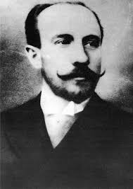
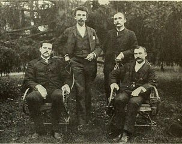

The Inventor
Herman Casler
 - Herman Casler (left) was born in Fort Plain, NY in 1867.
- He started working as an apprentice to cousin, inventor Charles E. Lipe. He worked from Lipe from 1889 - 1893.
- From 1893-1895, Casler worked for General Electric Co. as a draftsman - he designed electric rock drills.
- Herman co-founded KMCD group (right), which became the American Mutoscope and Biograph company.
- Casler formed the Marvin & Casler Co. with Harry Marvin, which made a range of products (engines, machines, automatic palm readers, motion picture machines).
- Soon after, Casler became the sole owner, and sold the company in 1919.
- He retired in 1926 but remained as a consulting engineer for other businesses even into his retirement.
- Casler filed his final patent in 1937.
- Herman Casler died in 1939.
Inventions
Mutoscope
W.K.L. Dickson suggested that Casler create the Mutoscope, which was ready by fall 1894. It was initially a competitor of Edison’s kinetoscope.
Casler patented the Mutoscope on October 8th, 1901 (left).
Mutagraph
Casler developed the Mutagraph, a camera, ehich was prototyped by June 1895.
Biograph Projector
Casler designed the Biograph projector.
Hand-cranked Camera
In 1900 Casler helped develop a portable hand-cranked camera.